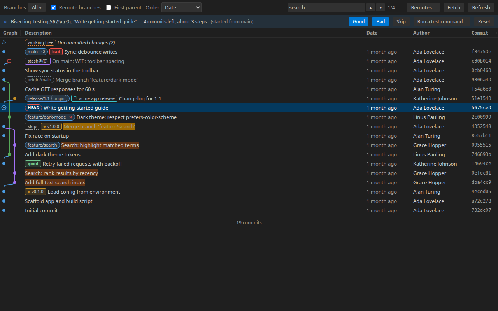

git bisect: find the commit that introduced a bug
Something worked last month and is broken now, with hundreds of commits in between. git bisect finds the first broken commit. You name one commit that works and one that does not; git checks out commits in between, you test each, and the range shrinks until one commit is left. This guide covers the manual flow, git bisect run, custom terms, what VS Code has built in, and bisecting from the Mergeline graph.
Quick answers
| I want to… | Run |
|---|---|
| Start a bisect | git bisect start <bad> <good> |
| Mark the commit I just tested | git bisect good, git bisect bad or git bisect skip |
| Let a script do the testing | git bisect run <cmd> |
Test only merges on main | git bisect start --first-parent <bad> <good> |
| Stop and go back to my branch | git bisect reset |
We ran every command on this page with git 2.53 in throwaway repositories and quote the output we saw. The main test repository has twelve commits, “Change 1” to “Change 12”, with a bug planted in Change 8.
What git bisect does
It runs a binary search over your history: test the commit in the middle of the range, throw away the half that cannot contain the culprit, repeat. A good commit is one without the bug; a bad commit has it. Each test halves the range, so N commits take about log2(N) tests. In a repository with 1,000 commits, the first step said Bisecting: 499 revisions left to test after this (roughly 9 steps), and git bisect run found the planted bug after 10 tests.
Bisect by hand
git bisect start status: waiting for both good and bad commits git bisect bad # HEAD (Change 12) has the bug status: waiting for good commit(s), bad commit known git bisect good f404d41 # Change 1 did not Bisecting: 5 revisions left to test after this (roughly 3 steps) [6cec3e4e22d273a51fe955094e6f266c3873819b] Change 6 git bisect good # tested: works Bisecting: 2 revisions left to test after this (roughly 2 steps) [4c41fe017a27b54efe928f59654431bab8f11780] Change 9 git bisect bad # tested: broken Bisecting: 0 revisions left to test after this (roughly 1 step) [a1b1bed6fb31ea35bb4e6b06f695a9a6c3c9d1de] Change 8 git bisect bad Bisecting: 0 revisions left to test after this (roughly 0 steps) [9d737a816fd4e5ef54bddb0d20db33a385998ff6] Change 7 git bisect good a1b1bed6fb31ea35bb4e6b06f695a9a6c3c9d1de is the first bad commit git bisect reset Previous HEAD position was 9d737a8 Change 7 Switched to branch 'main'
After each mark, git checks out the next commit as a detached HEAD: HEAD points at a commit, not a branch. Build it, test it, mark it. If a commit cannot be tested, for example because it does not compile, run git bisect skip and git picks a nearby one. git bisect reset returns you to the branch you started on.
Automate it: git bisect run
If a command can tell good from bad, git does the marking. It runs the command on each commit and reads its exit code, the number a program returns when it ends:
| Exit code | Meaning |
|---|---|
| 0 | good |
| 1 to 127, except 125 | bad |
| 125 | skip: this commit cannot be tested |
| 128 to 255 | abort the bisect |
git bisect start main f404d41 Bisecting: 5 revisions left to test after this (roughly 3 steps) [6cec3e4e22d273a51fe955094e6f266c3873819b] Change 6 git bisect run sh test.sh running 'sh' 'test.sh' Bisecting: 2 revisions left to test after this (roughly 2 steps) [4c41fe017a27b54efe928f59654431bab8f11780] Change 9 … a1b1bed6fb31ea35bb4e6b06f695a9a6c3c9d1de is the first bad commit … bisect found first bad commit
A command that exited 128 stopped the run with error: bisect run failed: exit code 128 from 'sh' '-c' 'exit 128' is < 0 or >= 128. Codes 126 and 127 are what a shell returns when a command cannot be run or is not found. When we got those, git re-ran the command on the good commit, and since it failed there too, it stopped with error: bogus exit code 127 for good revision. To skip commits that do not build, end the build step with || exit 125, as git’s manual suggests: git bisect run sh -c "make || exit 125; ./check.sh".
Custom terms: old and new
“Good” and “bad” read oddly when you are hunting a slowdown or the commit that fixed something. git bisect old and git bisect new work in any session. Or name the states yourself:
git bisect start --term-old=fast --term-new=slow git bisect slow git bisect fast f404d41 git bisect terms Your current terms are fast for the old state and slow for the new state.
The result then reads a1b1bed6fb31ea35bb4e6b06f695a9a6c3c9d1de is the first slow commit. In that session git bisect good is refused: error: Invalid command: you're currently in a slow/fast bisect.
Log, replay and visualize
git bisect log prints every mark so far as commands. If you marked a commit wrongly, save it with git bisect log > bisect.log, delete the wrong line, run git bisect reset, then git bisect replay bisect.log. Replaying our log ended with the same is the first bad commit line. git bisect visualize (or view) shows the commits still in question in gitk, or with git log when there is no graphical session; it accepts git log options such as --oneline.
Bisect in VS Code
VS Code’s built-in Git has no bisect commands. We searched the Git extension bundled with VS Code 1.147 for “bisect” and found nothing. So you bisect in the integrated terminal (Ctrl+`) with the commands above.
Bisect from the Mergeline graph
Mergeline is a free, MIT-licensed git graph for VS Code. From version 0.13 you can run a bisect from the graph.
- Start. Right-click a commit and choose Start bisect: this commit is bad or Start bisect: this commit is good. A bar above the graph shows “Bisecting: mark a good commit” (or bad) until both ends are set.
- Test and mark. The commit under test is the detached HEAD row. The bar reads “Bisecting: testing <sha> “subject” — N commits left, about K steps”, with Good, Bad, Skip, Run a test command… and Reset. The commit menu has Bisect: mark as bad, Bisect: mark as good, Bisect: skip this commit and Bisect: stop and go back (reset). Marked commits carry small badges: “bad”, “good” and “skip”.
- Or automate. Run a test command… asks for a command and runs
git bisect run sh -c '<command>'in a VS Code terminal named “Mergeline bisect”. Going throughsh -cmeans&&, pipes and redirections in your command work (git quotes the arguments ofgit bisect run, so a command likenpm run build && npm testpassed as one string would otherwise fail with “not found”). The graph follows along. - Finish. The bar shows “First bad commit: <sha> “subject”” with Show and Reset.

A bisect you started in a terminal shows up in the bar too. With custom terms, the buttons use your names, such as old and new.
Mergeline is not on the VS Code Marketplace yet. Download the .vsix from GitHub and run Extensions: Install from VSIX… (full steps).
Tips
- Start with a clean working tree, or stash first (see the stash guide). Bisect checks out other commits. With an edited file that differs between commits, our start failed with
error: Your local changes to the following files would be overwritten by checkout:. - Skip commits that do not build rather than guessing: a wrong mark sends the search into the wrong half.
- Test only merges on
mainwithgit bisect start --first-parent(git 2.29 and later). The first parent of a merge is the branch it was merged into. With four merged pull requests of three commits each, plain bisect said7 revisions left to test after this (roughly 3 steps); with--first-parent,1 revision left to test after this (roughly 1 step). More in git log --first-parent.
FAQ
Can I find the commit that fixed a bug?
Yes. Use terms that fit: git bisect start --term-old=broken --term-new=fixed, then mark commits broken or fixed.
What if the first bad commit is a merge?
Bisect inside it: git bisect start <merge>^2 <merge>^1 searches the commits the merge brought in.
Related: git log --first-parent, find commits by path and undo in git.